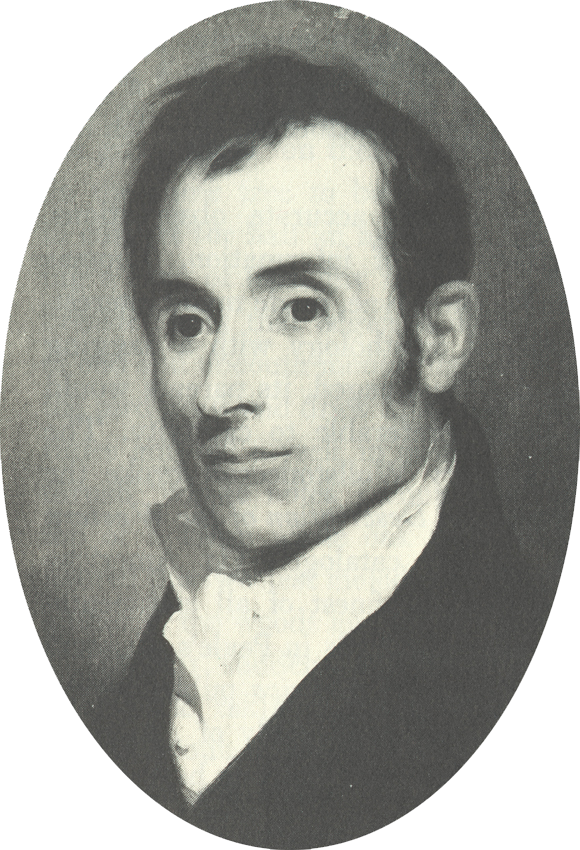

Alexander Wilson(アレクサンダー・ウィルソン)

Alexander Wilson (July 6, 1766 – August 23, 1813) was a Scottish-American poet, ornithologist, naturalist, and illustrator. Identified by George Ord as the "Father of American Ornithology", Wilson is regarded as the greatest American ornithologist prior to Audubon.
(アレクサンダー・ウィルソン（Alexander Wilson、1766年7月6日 - 1813年8月23日）はスコットランド生まれのアメリカ合衆国の鳥類学者、博物画家、作家である。スコットランドでは社会風刺の詩をつくり、アメリカでは鳥類図鑑 "American Ornithology"を刊行した。)
Alexander Wilson (July 6, 1766 - 1813 September 1813), nurse, author of a museum in the USA. It was published in Scotland in the USA and sang.